✦
การสร้างรูปด้วย AI
เรียนรู้ว่า Prompt ที่ละเอียดและชัดเจนช่วยให้ AI สร้างภาพที่เฉพาะเจาะจงและตรงกับความต้องการมากขึ้น
Prompt EngineeringAI • CREATIVE • PRACTICE
บันทึกการเรียนรู้จากการทดลองใช้ AI เพื่อสร้างภาพ สร้างแผนภาพ เขียนบทความ สร้างสไลด์ และพัฒนาเว็บไซต์จริง
01 / OVERVIEW
การเรียนรู้ครั้งนี้เน้นการทดลองจริง โดยเริ่มจาก Prompt เบื้องต้น แล้วเพิ่มรายละเอียดผ่านการถาม-ตอบหรือปรับคำสั่ง จนได้ผลลัพธ์ที่ตรงตามวัตถุประสงค์มากขึ้น
เรียนรู้ว่า Prompt ที่ละเอียดและชัดเจนช่วยให้ AI สร้างภาพที่เฉพาะเจาะจงและตรงกับความต้องการมากขึ้น
Prompt Engineeringนำสมการหลายรูปแบบมาประกอบเป็นภาพ และปรับค่าศูนย์กลาง รัศมี ความกว้าง หรือความชันเพื่อควบคุมรูปร่าง
Mathematicsเปลี่ยนข้อมูลที่ซับซ้อนให้เป็นแผนภาพ และเพิ่มรายละเอียดเพื่อสื่อสารความสัมพันธ์ของระบบได้ชัดเจน
Visualizationสร้างบทความอย่างเป็นระบบ พร้อมปรับโครงสร้าง ตาราง รูปแบบตัวอักษร และการจัดหน้าให้เหมาะกับเอกสาร
Document Designนำข้อมูลเข้าสู่ NotebookLM เพื่อสรุปสาระสำคัญและจัดโครงสร้างการนำเสนอ ก่อนปรับ Prompt ให้ได้สไลด์ที่เหมาะสม
Presentationเขียน HTML, CSS และ JavaScript ปรับดีไซน์เว็บไซต์ และนำไฟล์ขึ้น GitHub เพื่อเผยแพร่ให้เข้าถึงได้จริง
Web Development02 / BEFORE → AFTER
เหมาะสำหรับการเริ่มต้นและดูแนวทาง แต่ผลลัพธ์อาจยังไม่เฉพาะเจาะจง
เพิ่มข้อมูลเรื่องผู้อยู่อาศัย ห้อง สไตล์ พื้นที่ และงบประมาณ ทำให้ผลลัพธ์ตรงความต้องการมากขึ้น
02 / WORK EVIDENCE
รวมภาพตัวอย่างจากไฟล์ PDF เพื่อให้เห็นพัฒนาการของผลงาน ตั้งแต่ผลลัพธ์แรกไปจนถึงผลลัพธ์ที่ปรับปรุงแล้วจากการเพิ่มรายละเอียดของ Prompt
Prompt แรก → Prompt ใหม่
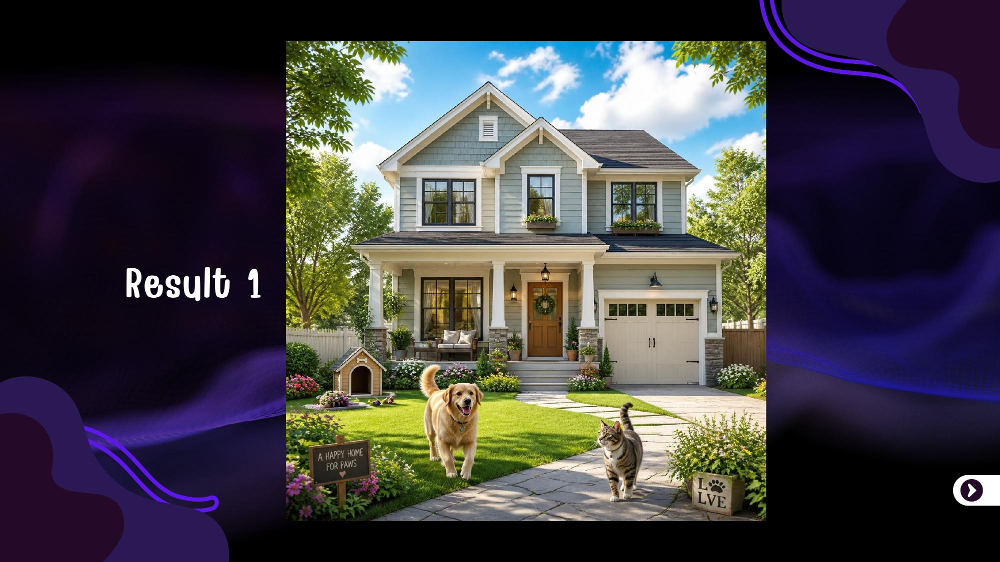
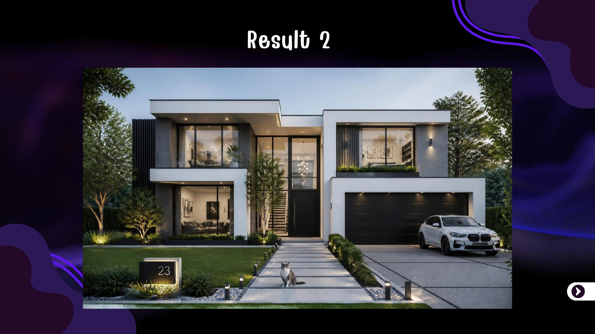
ผลลัพธ์แรก → ผลลัพธ์ใหม่
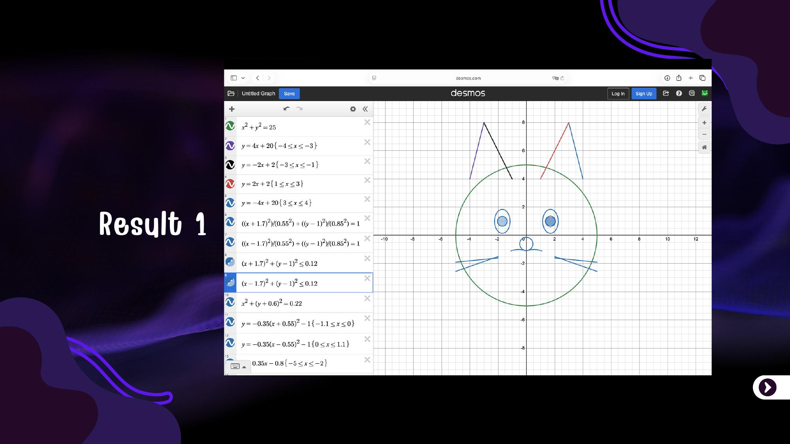
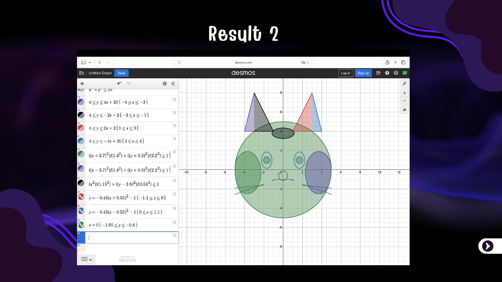
ผลลัพธ์แรก → ผลลัพธ์ใหม่
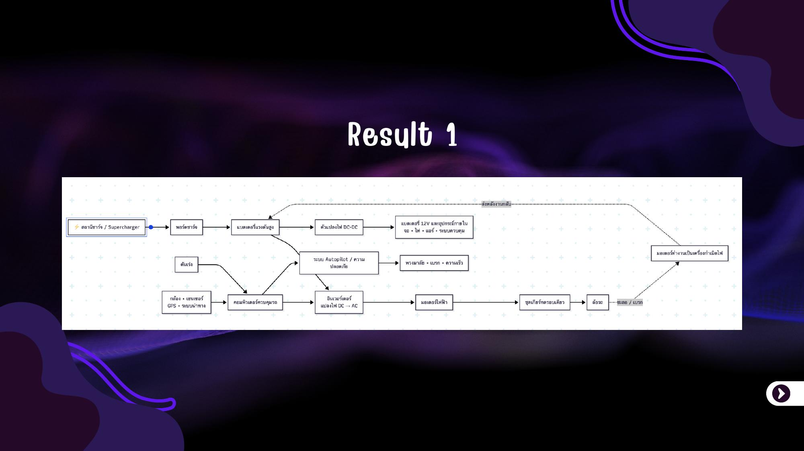
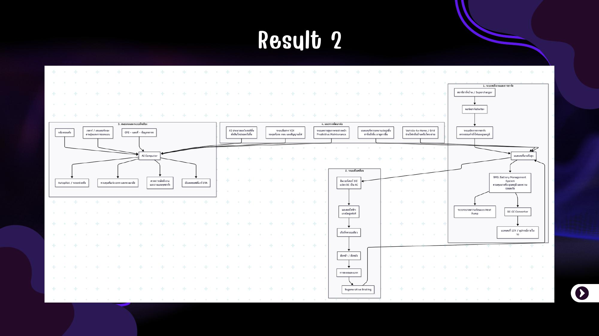
ผลลัพธ์แรก → ผลลัพธ์ใหม่
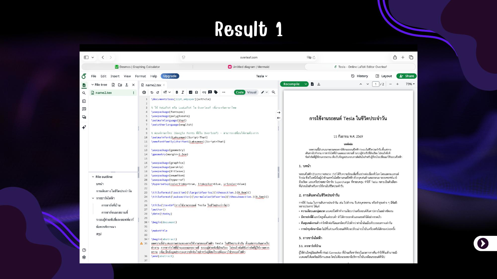
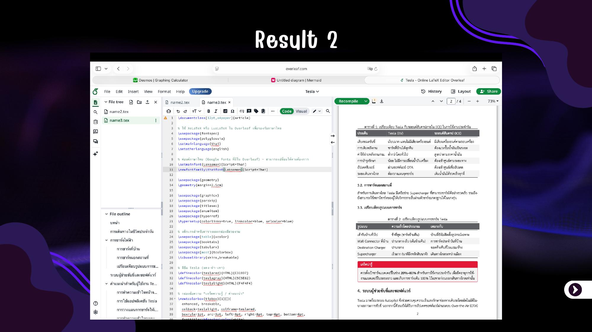
ผลลัพธ์แรก → ผลลัพธ์ใหม่
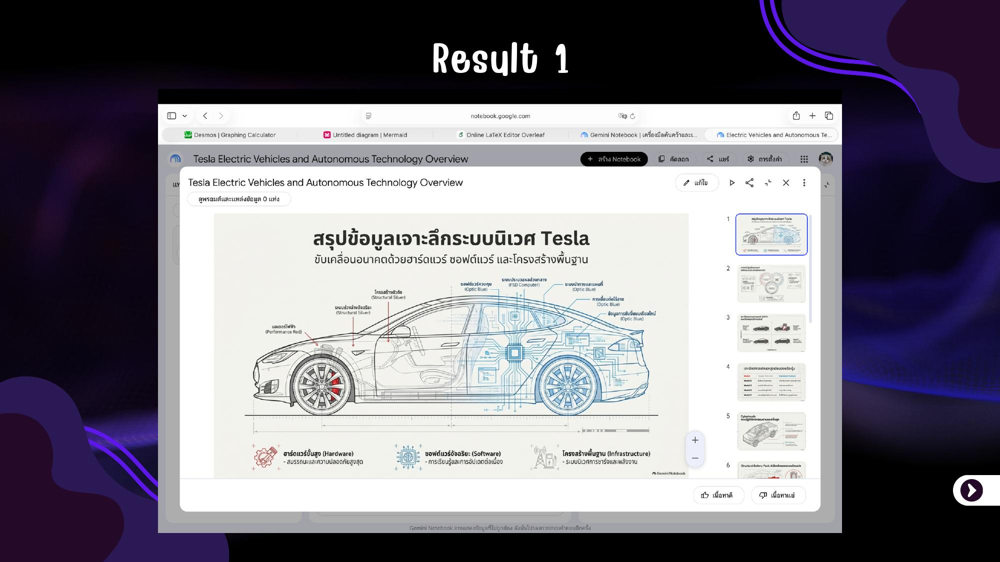
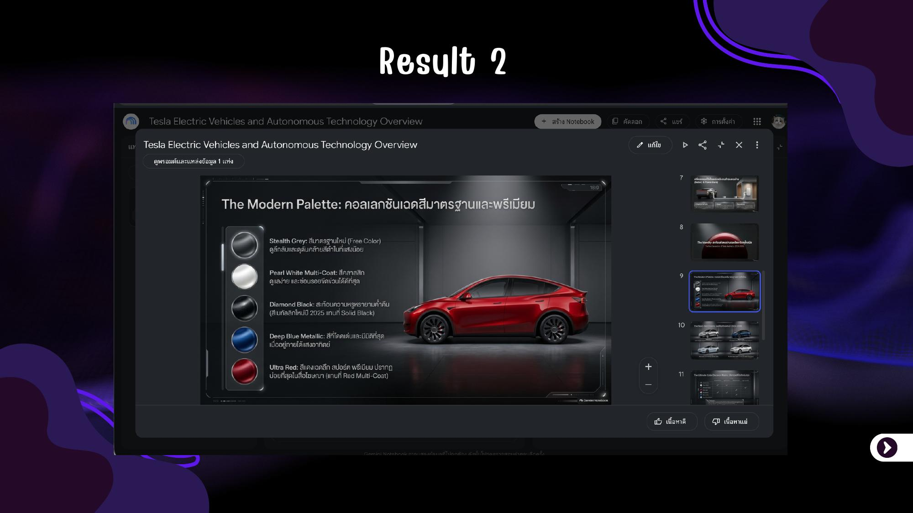
ผลลัพธ์แรก → ผลลัพธ์ใหม่
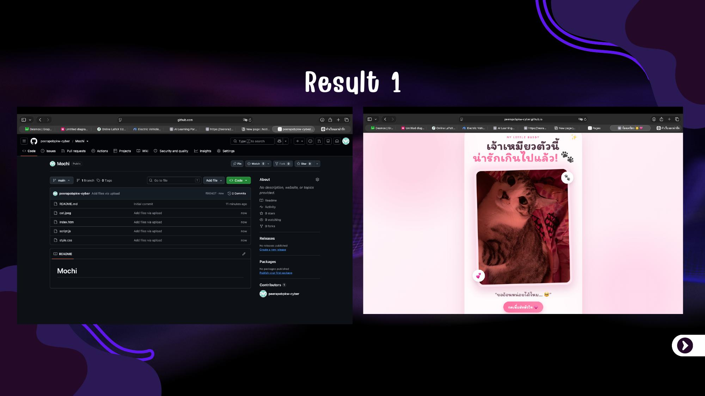
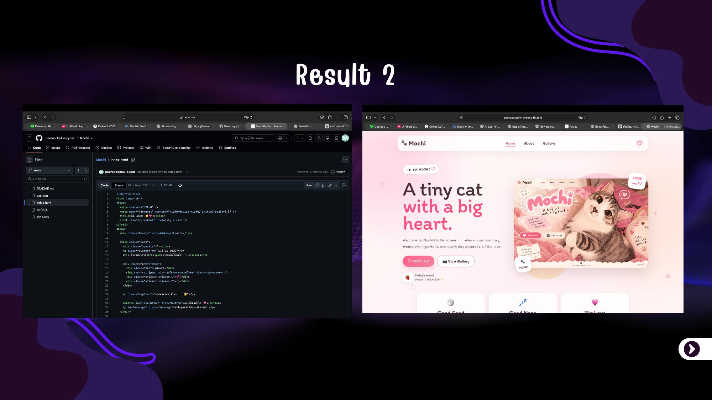
04 / REFLECTION
การใช้ AI ไม่ใช่เพียงการสั่งให้ระบบสร้างผลงานแล้วนำไปใช้ทันที แต่เป็นกระบวนการทดลอง ตรวจสอบ วิเคราะห์ และปรับคำสั่งหลายครั้ง เพื่อให้ได้ผลลัพธ์ที่ตรงตามวัตถุประสงค์
สิ่งสำคัญที่ได้เรียนรู้คือ คุณภาพของผลลัพธ์ขึ้นอยู่กับความชัดเจน ของคำสั่งและข้อมูลที่นำมาใช้ เมื่อเพิ่มรายละเอียดและกำหนดเป้าหมายให้ชัดเจน ผลงานก็มีความเฉพาะเจาะจงและสื่อสารได้ดีขึ้น
นอกจากนี้ยังได้ฝึกการนำ AI ไปประยุกต์กับงานหลายรูปแบบ ตั้งแต่ภาพ คณิตศาสตร์ แผนภาพ เอกสาร สไลด์ ไปจนถึงเว็บไซต์ที่สามารถเผยแพร่ได้จริง
05 / TOOLKIT
สร้างและปรับปรุงภาพจาก Prompt
สร้างภาพจากสมการคณิตศาสตร์
สร้าง Diagram จาก Code
สร้างบทความด้วย LaTeX
สรุปข้อมูลและสร้าง Slides
จัดเก็บและเผยแพร่เว็บไซต์
AI ให้คำตอบได้ดีขึ้น เมื่อเรารู้ว่า
ต้องการถามอะไรอย่างชัดเจน
LEARN • TEST • REFINE • CREATE